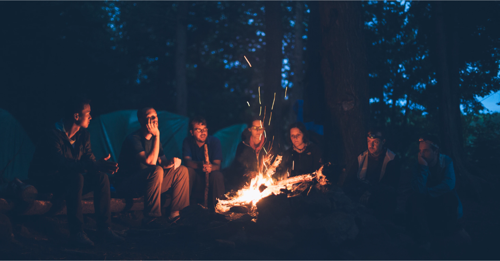

Useful links
If you feel under the weather mentally don't be afraid to reach out for help.
Even if you don't want to make bigger steps at least check out these videos, which might help to make you feel better, and find ways to solve some problems.
Check out this chanel!
Check out this chanel!
However, it doesn't have to feel enough, usually, every university has a place where you can go to, talk about personal problems so don't be afraid to reach out.
Fontys help!
For a one-on-one therapy session, you can also check out Better Help which is an online site where you can search for therapists.
Better help!